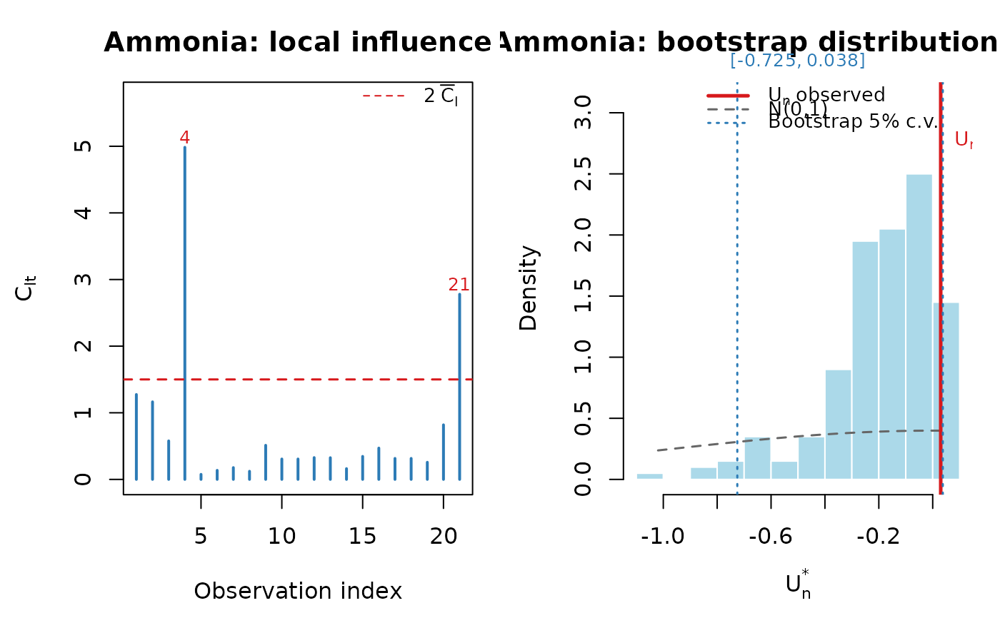

Fits the simplex regression model to the Brownlee (1965) ammonia-oxidation data, runs the bootstrap \(U_n\) test, and optionally produces the influence index plot and the half-normal envelope plot, reproducing Section 7.1 and Tables 5–6 of Ospina et al. (2026).
Value
A list (invisibly) with components:
fitThe
"simplexfit"object.gofThe
"simplexgof"object.diagThe
simplex_diag()output.table_paramsData frame of parameter estimates (Table 5).
table_gofData frame of GoF test results (Table 6).
Examples
# \donttest{
res <- paper_ammonia(B = 200, seed = 123) # B = 1000 in the paper
#> =========================================
#> Ammonia application ? Brownlee (1965)
#> n = 21, p = 4, q = 3, k = 7
#> =========================================
#>
#>
#> Simplex Regression (n = 21 ; p = 4 ; q = 3 )
#>
#> Estimate Std.Error z.value Pr
#> beta1 -12.9893 2.1038 -6.1742 < 0.001
#> beta2 0.1312 0.0363 3.6140 < 0.001
#> beta3 0.2705 0.1024 2.6408 0.00827
#> beta4 -0.0037 0.0017 -2.1473 0.03177
#> gamma1 3.8342 3.3908 1.1308 0.25815
#> gamma2 -0.4454 0.2882 -1.5456 0.12219
#> gamma3 0.0044 0.0024 1.8791 0.06024
#>
#> Log-likelihood: 100.4159 | converged: TRUE
#> =============================================================
#> simplexgof: Bootstrap U_n Test for Simplex Regression
#> =============================================================
#> n = 21, p = 4, q = 3, B = 200
#>
#> Fitting original model...
#>
#> Model estimates:
#>
#> Simplex Regression (n = 21 ; p = 4 ; q = 3 )
#>
#> Estimate Std.Error z.value Pr
#> beta1 -12.9893 2.1038 -6.1742 < 0.001
#> beta2 0.1312 0.0363 3.6140 < 0.001
#> beta3 0.2705 0.1024 2.6408 0.00827
#> beta4 -0.0037 0.0017 -2.1473 0.03177
#> gamma1 3.8342 3.3908 1.1308 0.25815
#> gamma2 -0.4454 0.2882 -1.5456 0.12219
#> gamma3 0.0044 0.0024 1.8791 0.06024
#>
#> Log-likelihood: 100.4159 | converged: TRUE
#>
#> mu: min = 0.0075, mean = 0.0181, max = 0.0408
#> Tn = 8.0447
#> Un = 0.0298
#>
#> Starting 200 bootstrap replicates...
#> 50 / 200 done
#> 100 / 200 done
#> 150 / 200 done
#> 200 / 200 done
#>
#> === RESULT: Un = 0.0298 ===
#>
#> Bootstrap critical values:
#> alpha boot_lo boot_hi decision_boot
#> 1% -0.8803 0.0527 Do not reject H0
#> 5% -0.7253 0.0375 Do not reject H0
#> 10% -0.6359 0.0291 Reject H0
#>
#> Asymptotic N(0,1) critical values:
#> alpha norm_lo norm_hi decision_norm
#> 1% -2.5758 2.5758 Do not reject H0
#> 5% -1.9600 1.9600 Do not reject H0
#> 10% -1.6449 1.6449 Do not reject H0
#>
#>
#> --- Table of parameter estimates ---
#> Parameter Sub_model Estimate Std_Error z_value p_value
#> beta1 Mean -12.9893 2.1038 -6.1742 < 0.001
#> beta2 Mean 0.1312 0.0363 3.6140 < 0.001
#> beta3 Mean 0.2705 0.1024 2.6408 0.00827
#> beta4 Mean -0.0037 0.0017 -2.1473 0.03177
#> gamma1 Dispersion 3.8342 3.3908 1.1308 0.25815
#> gamma2 Dispersion -0.4454 0.2882 -1.5456 0.12219
#> gamma3 Dispersion 0.0044 0.0024 1.8791 0.06024
#>
#> --- GoF test results ---
#> Un alpha Boot_lo Boot_hi Decision_boot Norm_lo Norm_hi Decision_norm
#> 0.0298 1% -0.8803 0.0527 Do not reject H0 -2.5758 2.5758 Do not reject H0
#> 0.0298 5% -0.7253 0.0375 Do not reject H0 -1.9600 1.9600 Do not reject H0
#> 0.0298 10% -0.6359 0.0291 Reject H0 -1.6449 1.6449 Do not reject H0

print(res$table_params)
#> Parameter Sub_model Estimate Std_Error z_value p_value
#> 1 beta1 Mean -12.9893 2.1038 -6.1742 < 0.001
#> 2 beta2 Mean 0.1312 0.0363 3.6140 < 0.001
#> 3 beta3 Mean 0.2705 0.1024 2.6408 0.00827
#> 4 beta4 Mean -0.0037 0.0017 -2.1473 0.03177
#> 5 gamma1 Dispersion 3.8342 3.3908 1.1308 0.25815
#> 6 gamma2 Dispersion -0.4454 0.2882 -1.5456 0.12219
#> 7 gamma3 Dispersion 0.0044 0.0024 1.8791 0.06024
print(res$table_gof)
#> Un alpha Boot_lo Boot_hi Decision_boot Norm_lo Norm_hi
#> 1 0.0298 1% -0.8803 0.0527 Do not reject H0 -2.5758 2.5758
#> 2 0.0298 5% -0.7253 0.0375 Do not reject H0 -1.9600 1.9600
#> 3 0.0298 10% -0.6359 0.0291 Reject H0 -1.6449 1.6449
#> Decision_norm
#> 1 Do not reject H0
#> 2 Do not reject H0
#> 3 Do not reject H0
# }